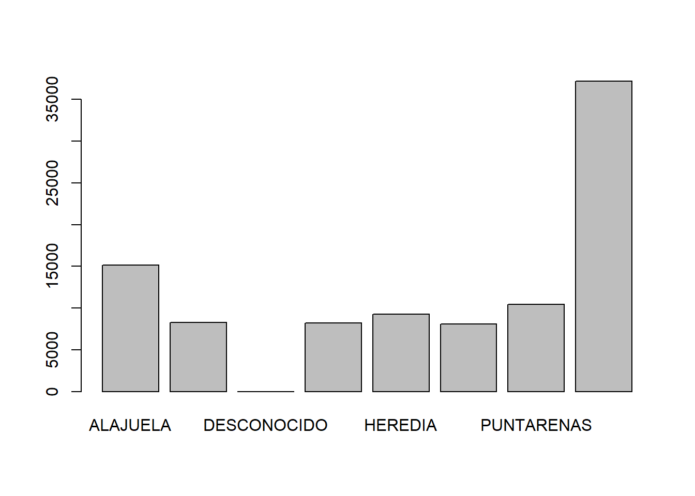
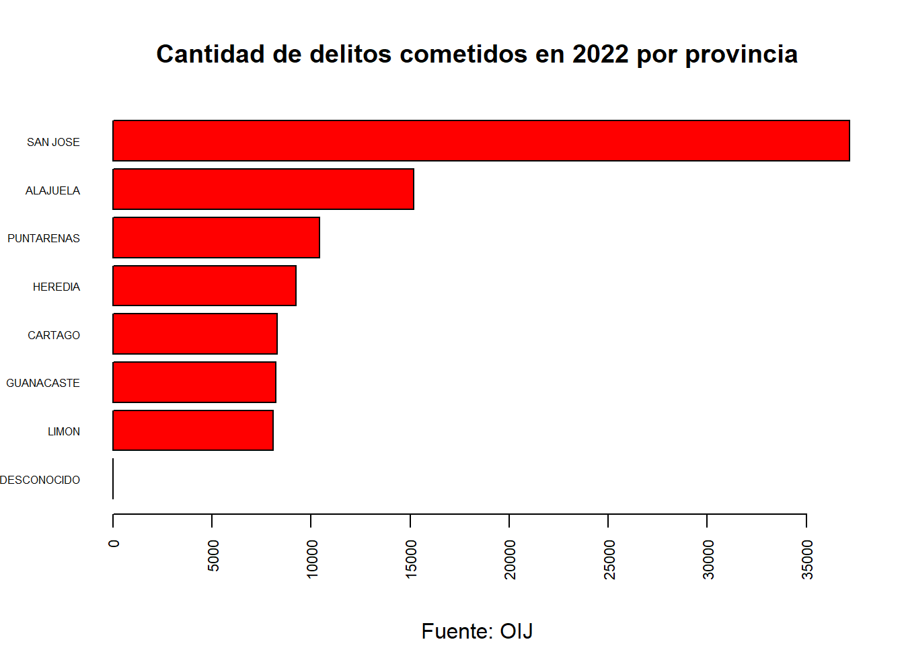
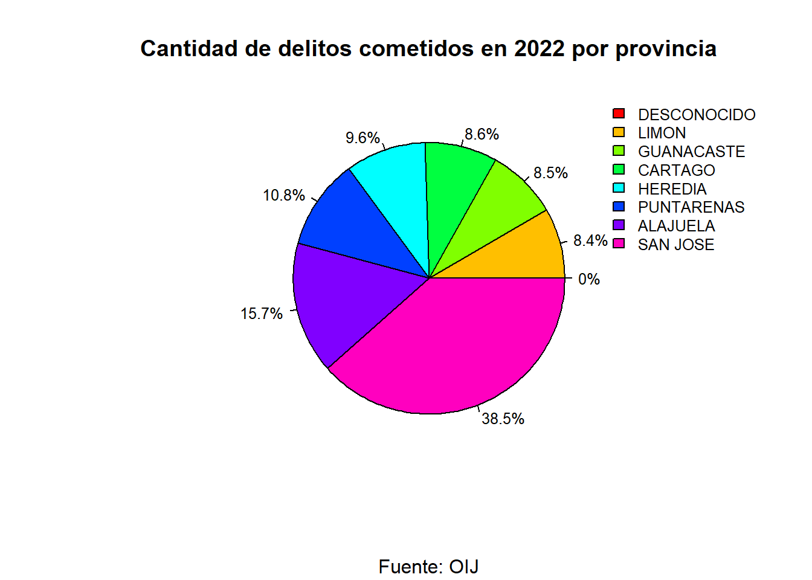

| Delito | Fecha | Victima | Edad | Provincia |
|---|---|---|---|---|
| DELITOS CONTRA LA ADMINISTRACION DE JUSTICIA | 31/12/2022 | VEHICULO | Adulto Mayor | SAN JOSE |
| DELITOS CONTRA LA AUTORIDAD PUBLICA | 31/12/2022 | PERSONA | Mayor de edad | SAN JOSE |
| DELITOS CONTRA LA LIBERTAD | 31/12/2022 | PERSONA | Mayor de edad | LIMON |
| DELITOS CONTRA LA LIBERTAD | 31/12/2022 | PERSONA | Mayor de edad | CARTAGO |
| DELITOS CONTRA LA LIBERTAD | 31/12/2022 | PERSONA | Mayor de edad | PUNTARENAS |
| DELITOS CONTRA LA LIBERTAD | 31/12/2022 | PERSONA | Mayor de edad | SAN JOSE |
| DELITOS CONTRA LA LIBERTAD | 31/12/2022 | PERSONA | Mayor de edad | SAN JOSE |
| DELITOS CONTRA LA LIBERTAD | 31/12/2022 | PERSONA | Mayor de edad | SAN JOSE |
| DELITOS CONTRA LA LIBERTAD | 31/12/2022 | PERSONA | Mayor de edad | SAN JOSE |
| DELITOS CONTRA LA LIBERTAD | 31/12/2022 | PERSONA | Menor de edad | SAN JOSE |
index
Este documento presenta datos recuperados del sitio de datos abiertos del Organismo de Investigación Judicial (OIJ)
Carga y muestra de los datos
graficos de delitos por provincia
barras verticales
Código
barplot (height = table(delitos_2022$Provincia))
barras horizontales
Código
# Crear tabla de frecuencias
tabla_delitos <- table(delitos_2022$Provincia)
# Ordenar ascendentemente la tabla de frecuencia
tabla_delitos_ordenada <- sort(tabla_delitos)
# Gráfico de barras horizontales
barplot(
height = tabla_delitos_ordenada,
main = "Cantidad de delitos cometidos en 2022 por provincia",
sub = "Fuente: OIJ",
col = "red",
las = 2,
cex.names = 0.5,
cex.axis = 0.7,
horiz = TRUE
)
pastel
Código
tabla_delitos <- table(delitos_2022$Provincia)
tabla_delitos_ordenada <- sort(tabla_delitos)
pie(
tabla_delitos_ordenada,
main = "Cantidad de delitos cometidos en 2022 por provincia",
sub = "Fuente: OIJ",
col = rainbow(length(tabla_delitos_ordenada)),
cex = 0.8,
labels = paste0(
round(100 * tabla_delitos_ordenada / sum(tabla_delitos_ordenada), 1),
"%"
)
)
legend(
"topright",
legend = names(tabla_delitos_ordenada),
fill = rainbow(length(tabla_delitos_ordenada)),
cex = 0.8,
bty = "n" # quitar el marco de la leyenda, valor = ("n", "o")
)